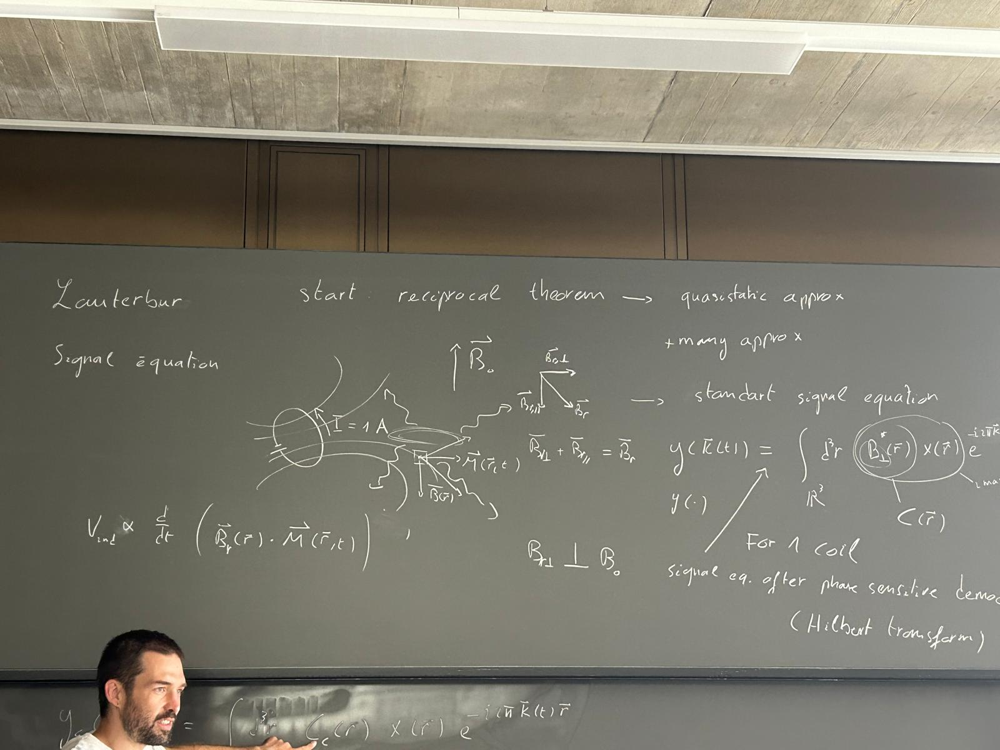

MRI Reconstructions
From the Theory to the Implementation
{kind=link}
The Monalisa toolbox for MRI reconstruction has been originaly developed at CIBM-CHUV between 2018 and 2023 by Bastien Milani. It continued to evovled until now, notably by the contribution of Berk Can Açikgöz while working in QIS lab at Inselspital and university of Bern.
Originally, the development of the toolbox began by the implementation of non-cartesian reconstructions. The first reconstruction implemented was a gridded reconstruction which is part of the static non-iterative familly. After that, some static iterative reconstruction were added and later 3D-CINE iterative reconstructions with temporal regularisation were implemented (4D and 5D), all for non-cartesian data. Iterative 3D-CINE reconstruction for cartesian data were then implemented on the same model. The toolbox was further enriched with GRAPPA implementations.
This toolbox can be used freely for any resonable personal or academic application, including publications. But any redistribution or commercial usage must be done in collaboration with lincensors (see the LICENSE file).
{kind=link}

- Instalation
- Introduction
- Demos
- Sketching a Classical Thermodynamic Theory of Information for MRI Reconstructions
- Introduction
- Iterative Reconstructions
- The Phase Space
- The Space of Memory States
- The Heat Engine
- The Computer as an Engine
- A Postulate for the Thermodynamical Entropy of the Dynamic Memory
- Information and Efficiency
- Connection with the Theory of Information
- Parallel Computing
- Connection with the Landauer’s Principle
- Connection with Statistical Mechanic
- Artificial Intelligence as an Amplification of Efficiency
- Conclusion